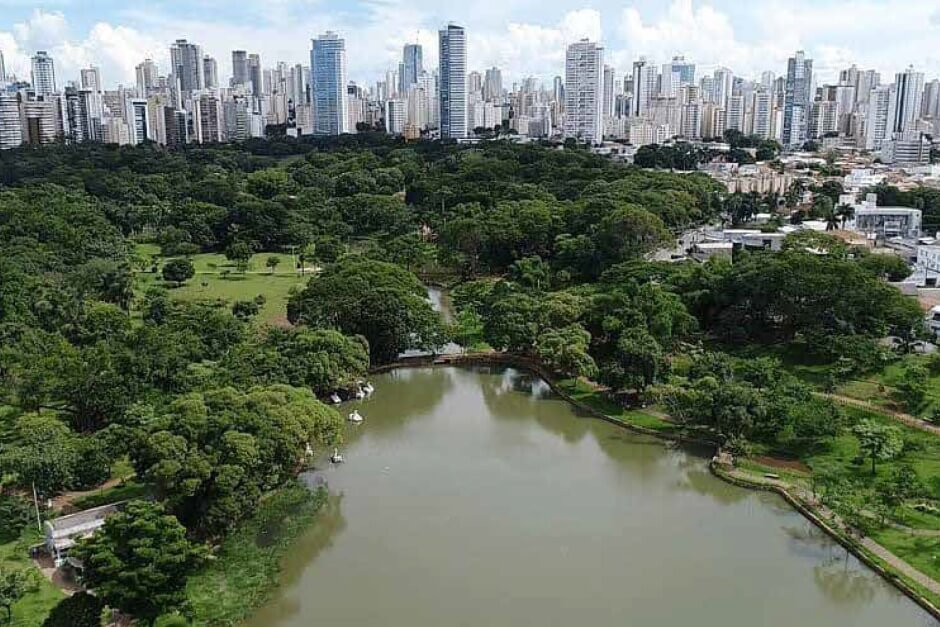
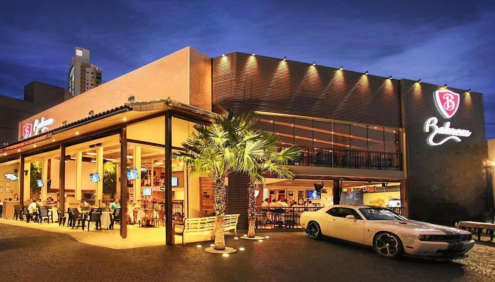
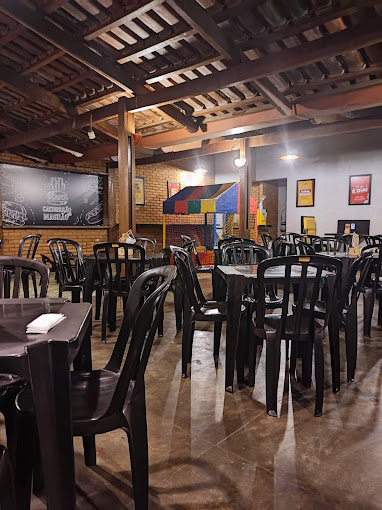

Uma das melhores experiências em Goiânia é aproveitar seus belos parques. Eles oferecem áreas verdes, lagos e espaços para atividades ao ar livre, sendo perfeitos para caminhadas, piqueniques e momentos de lazer com a família e amigos.
Os parques de Goiânia são sempre bem vistos. O que será que falam a respeito deles na avaliação dos usuários do Tripadvisor?

Depois de um dia de trabalho, nada melhor do que um bom chopp, um petisco e uma conversa em uma mesa de bar. Opções de sobra na região das ruas 144,137 e T-64.
Veja quais são os melhores bares da região no Melhores Goiânia.

O Pitdog do Magrão, localizado no Setor Universitário, é um dos pontos mais icônicos da gastronomia de Goiânia. Conhecido por seus lanches generosos e saborosos, o local é frequentado por estudantes, trabalhadores e moradores da região que buscam uma refeição deliciosa a um preço acessível. Com opções que vão desde o clássico X-Salada até combinações especiais, o Magrão se destaca pelo sabor autêntico e pelo atendimento acolhedor. Seja para um lanche rápido após a aula ou para matar a fome na madrugada, o Pitdog do Magrão é um verdadeiro patrimônio gastronômico da cidade!
Veja no mapa como chegar lá.